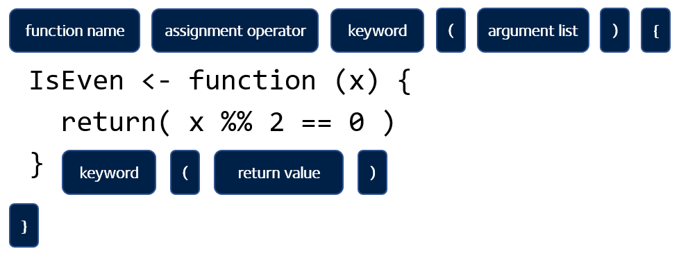

`+`(2, 3) # is equivalent to 2 + 3
`^`(2, 3) # is equivalent to 2 ^ 3
`>`(2, 3) # is equivalent to 2 > 3
`xor`(TRUE, FALSE) # is equivalent to xor(TRUE, FALSE)
+(2, 3) # Does this work?4 Function
Noticed how xor is written differently to the other operators? R is much more than a simple calculator and the number of operations offered by R far exceeds the number of readable symbols available on the keyboard, and so, most operations are called as functions (see [R built-in numeric functions] for a few more functions, e.g. abs, sqrt, sin).
To the R interpreter, xor(x, y) issues one call to a function named xor with two arguments x, and y. The same applies to all the other operators. All of the operators we studied so far are functions.
In R, a quick way to find out more about a function is to prefix
?to the name of the function. And yes, you guessed it,?itself is a function too.
Try these:
?xor
?`+`
?`?`4.1 Syntactic names
Noticed how we had to wrap symbols such as + and > in backticks “`”, and without them, expressions such as +(2, 3) evaluates to an error. At the same time, xor works just fine without the backtick wrapper. In both cases + and xor are both names of functions, but + had to be wrapped within backticks because the symbol + is not a syntactic name whereas xor is a perfectly fine syntactic name.
In R, a syntactic name must only consist of letters, digits,
., and_, and it cannot begin with_or a digit. Reserved words such asTRUE,FALSE, andfunction(?Reserved) also can’t be used as syntactic names.
In order to use a non-syntactic name to identify things in R, you have to wrap it between backticks.
4.2 Nearly everything that happens in R results from a function call
A function can be as simple as xor providing the result of one operation, but more often multiple operations are combined and organised in a specific way and encapsulated in a custom-named function. These functions are then combined to make a script that forms a piece of computer program.
Nearly everything that happens in R results from a function call. Therefore, basic programming centers on creating and refining functions. - John Chambers
Functions in R are first class objects.
See all functions in the base package with ls("package:base").
4.3 Write your own function
Write a function IsEven which takes a single numerical value as input and returns TRUE if and only if that given value is even.
IsEven <- function (x) {
return(x %% 2 == 0)
}
IsEven(10)
IsEven(9)
IsEven # type the function's name to see its implementation
`xor`
`+`
Note that some functions are designed to encapsulate a group of statements rather than work out a value. In such case, a return statement is not necessary. Otherwise, an explicit return is required. Note that this is not the same as the implicit return we describe in Avoid implicit return.
4.4 Avoid implicit return
Don’t do this: When a return statements is missing from the end of the function. R assumes that the evaluation of the last statement of the function is the return value. This is referred to as implicit return. This makes the code difficult to read, and should be avoided. The good practice is to always explicit return (i.e. use
return()explicitly at the endo of the function)
Throughout the module, we will give note to bad programming practices which should be avoid. For a more comprehensive read on good programming styles in R, we follow these two guides:
Where contrasting opinions are present, we follow Google’s R Style Guide over that of tidyverse.
4.5 Components
An R function has three parts
formals, the list of arguments used by the functionbody, the implementation of the function logicenvironment, the environment that encapsulate the function
Except the primitive and internal functions that are written in C. e.g.
abs,sum,+, etc.
formals(xor)
body(xor)
environment(xor)Also, user-defined functions:
Bmi <- function(weight, height) {
return(weight / height^2)
}
formals(Bmi)
body(Bmi)
environment(Bmi)4.6 Formals
Defining a function in R is similar to defining a variable. A function object defined by the function function is assigned a name by the <- operator.
The formals / signature / interface of the function is defined by the list of argument it takes.
Bmi <- function(weight, height) {
return(weight / height^2)
}
# arguments can be of any order when they are named
Bmi(weight = 90, height = 1.75)
Bmi(height = 1.75, weight = 90)
# otherwise the order is implicitly implied
Bmi(90, 1.75)4.6.1 Default values
# an argument may have a default value
Bmi <- function(weight = 90, height = 1.75) {
return(weight / height^2)
}
Bmi(90)
Bmi(70)
identical(
Bmi(, 1.75),
Bmi(height = 1.75)
)4.6.2 ...
The construct is referred to as “ellipsis” / “dot-dot-dot”.
When you want to pass arguments only used in a nested function:
f1 <- function(x, y) {
print(paste0("f1: x=", x, ", y=", y))
}
f2 <- function(z, ...) {
print(paste0("f2: z=", z))
f1(...)
}
f2(z = 55, x = 10, y = 9)Look at how the function save uses ellipsis:
savefunction (..., list = character(), file = stop("'file' must be specified"),
ascii = FALSE, version = NULL, envir = parent.frame(), compress = isTRUE(!ascii),
compression_level, eval.promises = TRUE, precheck = TRUE)
{
opts <- getOption("save.defaults")
if (missing(compress) && !is.null(opts$compress))
compress <- opts$compress
if (missing(compression_level) && !is.null(opts$compression_level))
compression_level <- opts$compression_level
if (missing(ascii) && !is.null(opts$ascii))
ascii <- opts$ascii
if (missing(version))
version <- opts$version
if (!is.null(version) && version < 2)
warning("Use of save versions prior to 2 is deprecated",
domain = NA)
names <- as.character(substitute(list(...)))[-1L]
if (missing(list) && !length(names))
warning("nothing specified to be save()d")
list <- c(list, names)
if (!is.null(version) && version == 1)
.Internal(save(list, file, ascii, version, envir, eval.promises))
else {
if (precheck) {
ok <- vapply(list, exists, NA, envir = envir)
if (!all(ok)) {
n <- sum(!ok)
stop(sprintf(ngettext(n, "object %s not found",
"objects %s not found"), paste(sQuote(list[!ok]),
collapse = ", ")), domain = NA)
}
}
if (is.character(file)) {
if (!nzchar(file))
stop(gettextf("'%s' must be a non-empty character string",
"file"), domain = NA)
if (!is.character(compress)) {
if (!is.logical(compress))
stop("'compress' must be logical or character")
compress <- if (compress)
"gzip"
else "no compression"
}
con <- switch(compress, bzip2 = {
if (!missing(compression_level)) bzfile(file,
"wb", compression = compression_level) else bzfile(file,
"wb")
}, xz = {
if (!missing(compression_level)) xzfile(file,
"wb", compression = compression_level) else xzfile(file,
"wb", compression = 9)
}, gzip = {
if (!missing(compression_level)) gzfile(file,
"wb", compression = compression_level) else gzfile(file,
"wb")
}, zstd = {
if (!missing(compression_level)) zstdfile(file,
"wb", compression = compression_level) else zstdfile(file,
"wb")
}, `no compression` = file(file, "wb"), stop(gettextf("'compress = \"%s\"' is invalid",
compress)))
on.exit(close(con))
}
else if (inherits(file, "connection"))
con <- file
else stop("bad file argument")
if (isOpen(con) && !ascii && summary(con)$text != "binary")
stop("can only save to a binary connection")
.Internal(saveToConn(list, con, ascii, version, envir,
eval.promises))
}
}
<bytecode: 0x10caab778>
<environment: namespace:base>4.7 Scoping
x <- 1
y <- 2
f <- function() {
x <- 10 # 1. Overwrites the x outside the function
print(paste0("f: 1. x=", x, ", y=", y)) # 2. Look for y from one level up
x <- 30
y <- 20
print(paste0("f: 2. x=", x, ", y=", y)) # 3. The closest y is used
}
f()
f() # 4. calling second time gives the same result
y <- 3
f() # 5. y updated just before the call4.8 Lazy evaluation
- An argument is not evaluated until its evaluation is needed.
- Short-circuit evaluation
TRUE || stop("ERROR")
f <- function(x) {
print(paste0("f called"))
return(x)
}
FALSE && f()
TRUE && f(FALSE) && f()
TRUE && f(TRUE) && f()The R language definition: Promise objects:
Promise objects are part of R’s lazy evaluation mechanism. They contain three slots: a value, an expression, and an environment. When a function is called the arguments are matched and then each of the formal arguments is bound to a promise. The expression that was given for that formal argument and a pointer to the environment the function was called from are stored in the promise.
Until that argument is accessed there is no value associated with the promise. When the argument is accessed, the stored expression is evaluated in the stored environment, and the result is returned. The result is also saved by the promise. The substitute function will extract the content of the expression slot. This allows the programmer to access either the value or the expression associated with the promise.
f <- function(x = 1, y = x * 10) {
x <- x*3
return(c(x, y))
}
f()- A promise is only evaluated once
f1 <- function(x) {
print("f1 called")
return(x + 10)
}
f2 <- function(y) {
return(c(y, y))
}
f3 <- function(y) {
return(c(f1(y), f1(y))) # 2 promises
}
f2(f1(100)) # 1 promise
f3(100)Take a look at the save function again to see how it prompts an error when no file name is specified by the user.
?saveWhen you share a function of yours with someone else, what potential issues do you see?